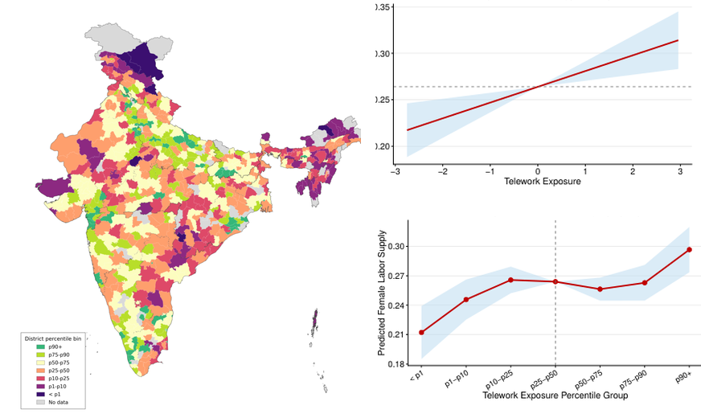

Telework exposure and female labor supply in emerging economies: Evidence from India
Research question
Does female labor supply increase when teleworkable jobs are supported by stronger local digital infrastructure in India?
Main result
A one-standard-deviation increase in telework exposure raises women's paid labor force participation by 3 percentage points; the instrumental-variable estimate is 6.8 percentage points. Gains are concentrated among college-educated women, higher-income households, and mothers with young children.
Read abstract
In many emerging economies, social norms encourage women to stay at home and existing jobs often involve long hours and on-site work arrangements. This raises the question: Does female labor supply increase when high telework-potential jobs align with robust local digital infrastructure? I explore this research question in India where traditional norms are predominant and female labor force participation is low. Telework requires two ingredients: jobs that can be done remotely and the digital infrastructure to do them. Since India lacks task surveys like O*NET in the United States, I first classify Indian occupations as teleworkable or not using supervised text methods on detailed descriptions from the national occupation manual. Then, I combine each district's share of teleworkable occupations with lagged cell tower density to measure local exposure to telework. I find that a one-standard-deviation increase in telework exposure raises women's paid labor force participation by 3 percentage points. To mitigate endogeneity from tower placements, I exploit terrain-driven variations in 4G signal strength as an instrumental variable. The corresponding causal estimate rises to 6.8 percentage points. The results remain robust under alternative specifications. These gains are concentrated among college-educated women, higher-income households, and mothers with young children or husbands in high-demand occupations, though the effects are weaker in traditional patrilocal households. Furthermore, I also find that women's employment has shifted toward teleworkable jobs since the pandemic, particularly in urban areas. Welfare analysis shows that public investment in digital connectivity can further unlock women's gains from telework. The benefit-cost ratio exceeds 11-to-2, and net annual earning gains for women amount to $3.7 billion.